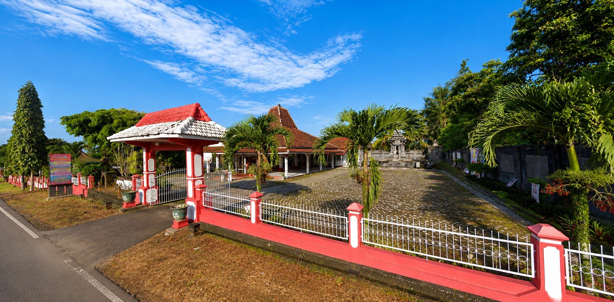
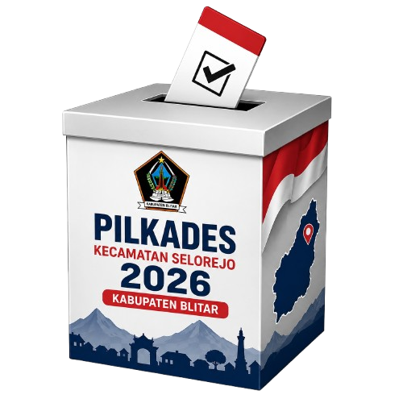
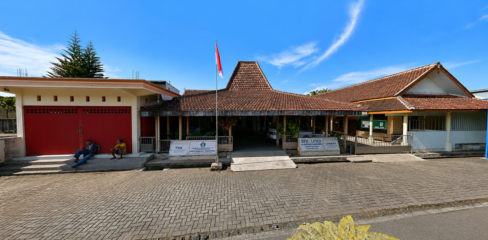
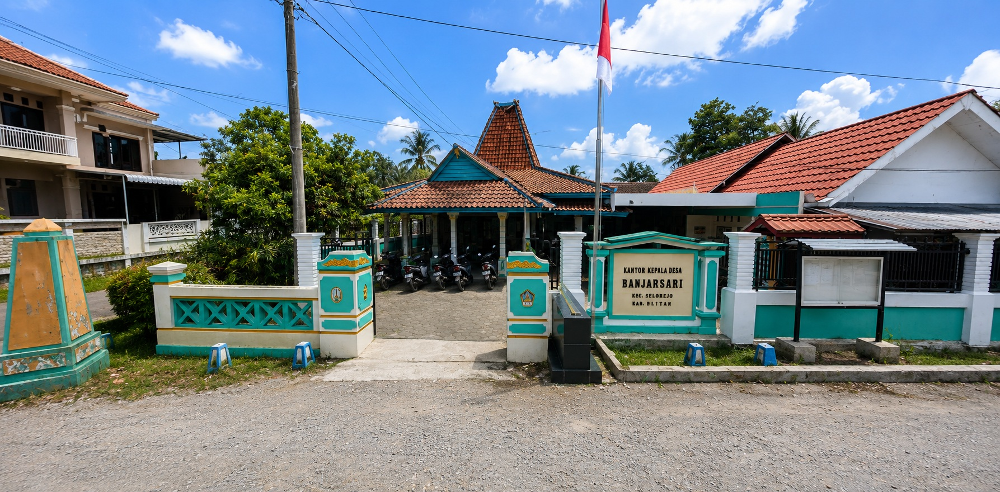

Desa Sidomulyo
Kepala Desa saat ini, Bapak Sumaji, telah menjalani satu kali masa bakti 6 (enam) tahun dan diperpanjang 2 (dua) tahun menjadi 8 (delapan) tahun.
Kecamatan Selorejo
Pelaksanaan Pilkades 2026
Menuju Pemilihan Kepala Desa Serentak Tahun 2026 Kabupaten Blitar.

Pelaksanaan Pilkades
Menuju Hari H dan Jam D : Pemungutan Suara
Pemilihan Kepala Desa Tahun 2026 merupakan pelaksanaan demokrasi desa secara langsung, umum, bebas, rahasia, jujur dan adil. Pemilihan Kepala Desa (Pilkades) Serentak Tahun 2026 merupakan agenda demokrasi di tingkat desa untuk memilih Kepala Desa sebagai pemimpin penyelenggaraan pemerintahan desa. Pilkades tahun ini memiliki arti penting karena menjadi pelaksanaan pertama setelah diberlakukannya kebijakan perpanjangan masa jabatan Kepala Desa dan Badan Permusyawaratan Desa (BPD) sesuai dengan ketentuan peraturan perundang-undangan yang berlaku. Momentum ini menjadi awal bagi masyarakat untuk kembali menggunakan hak pilihnya dalam menentukan arah kepemimpinan desa secara demokratis. Penyelenggaraan Pilkades Serentak Tahun 2026 berpedoman pada ketentuan peraturan perundang- undangan yang mengatur pemerintahan desa, pemilihan kepala desa, serta regulasi pelaksanaannya di Kabupaten Blitar. Seluruh tahapan diselenggarakan dengan menjunjung tinggi prinsip transparansi, akuntabilitas, profesionalitas, dan partisipasi masyarakat. Pilkades bertujuan untuk memilih Kepala Desa yang memiliki integritas, kapasitas, dan komitmen dalam memimpin penyelenggaraan pemerintahan desa, melaksanakan pembangunan, memberikan pelayanan kepada masyarakat, serta mewujudkan tata kelola pemerintahan desa yang baik. Pelaksanaannya dilakukan berdasarkan asas langsung, umum, bebas, rahasia, jujur, dan adil (LUBER JURDIL) sehingga setiap warga desa yang memenuhi persyaratan memiliki kesempatan yang sama untuk menggunakan hak pilihnya secara bertanggung jawab. Pada Tahun 2026, Kecamatan Selorejo melaksanakan Pemilihan Kepala Desa Serentak di tiga desa, yaitu Desa Sidomulyo, Desa Sumberagung, dan Desa Banjarsari. Seluruh tahapan diharapkan dapat berlangsung dengan aman, tertib, lancar, dan kondusif melalui sinergi antara pemerintah, penyelenggara, aparat keamanan, serta partisipasi aktif masyarakat. Melalui Pemilihan Kepala Desa Serentak Tahun 2026, diharapkan lahir pemimpin-pemimpin desa yang amanah, visioner, dan mampu membawa kemajuan bagi desanya, sehingga tercipta pemerintahan desa yang profesional, transparan, akuntabel, serta mampu meningkatkan kesejahteraan masyarakat dan memperkuat pembangunan di Kecamatan Selorejo secara berkelanjutan.
Tiga desa di Kecamatan Selorejo yang melaksanakan Pilkades Serentak Tahun 2026.

Kepala Desa saat ini, Bapak Sumaji, telah menjalani satu kali masa bakti 6 (enam) tahun dan diperpanjang 2 (dua) tahun menjadi 8 (delapan) tahun.
Kecamatan Selorejo
Pelaksanaan Pilkades 2026

Desa dengan wilayah luas dan potensi pertanian.
Kecamatan Selorejo
Pelaksanaan Pilkades 2026

Desa dengan masyarakat dinamis dan potensi UMKM.
Kecamatan Selorejo
Pelaksanaan Pilkades 2026
Informasi terbaru seputar Pilkades Serentak 2026.

Banner sudah pakai frame kayu jadi mudah memasangnya
Selengkapnya
Tahapan demi tahapan diumumkan melalui portal resmi.
Selengkapnya
Dihadiri oleh Kepala BPD dan panitia Pilkades.
Selengkapnya